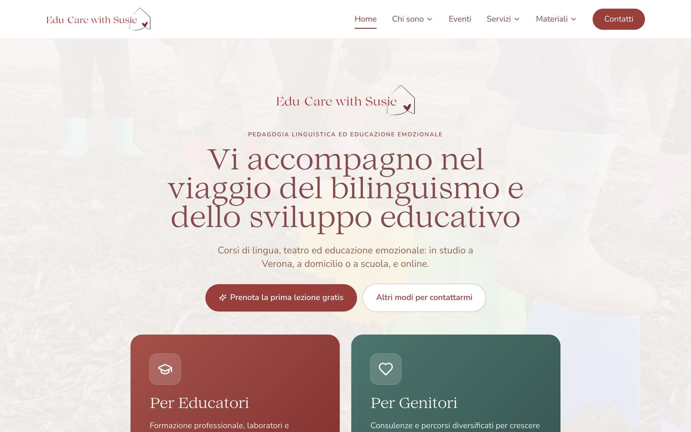

Edu-Care with Susie
Sito professionale per una pedagogista che lavora con famiglie ed educatori su bilinguismo e pedagogia.
- Problema
- Presentare servizi diversi a pubblici diversi, raccogliere contatti e pubblicare articoli ed eventi in autonomia.
- Cosa ho fatto
- Percorsi separati per genitori ed educatori, articoli, eventi, libri consigliati.
- Pannello per scrivere e pubblicare articoli senza toccare il codice.
- Modulo contatti e newsletter con doppia conferma via email.
- Pagine veloci e ottimizzate per Google.
React · TypeScript · Express · PostgreSQL · Tailwind · Vercel
